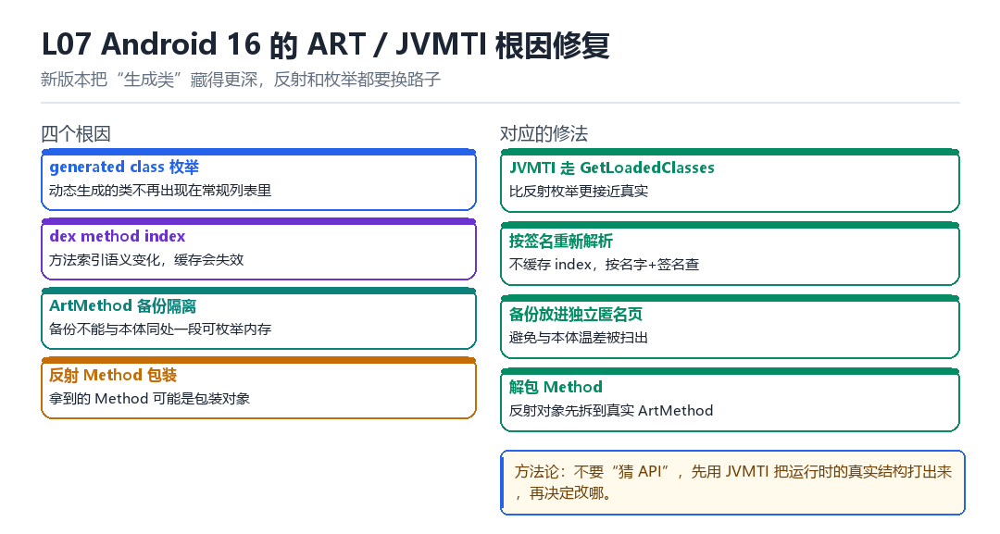

L07
Android 16 ART / JVMTI 根因修复
generated class 枚举、dex method index、隔离 ArtMethod backup、反射 Method 包装
新版本把“生成类”藏得更深，反射和枚举都要换路子。
7.1 四个根因

| 根因 | 表现 | 修法 |
|---|---|---|
| generated class 枚举 | 动态类不在常规列表里 | JVMTI GetLoadedClasses |
| dex method index | 索引语义变化，缓存失效 | 按签名重新解析 |
| ArtMethod 备份隔离 | 备份与本体温差明显 | 放进独立匿名页 |
| 反射 Method 包装 | 拿到的是包装对象 | 先解包到真实 ArtMethod |
7.2 方法论：先打出来，再决定改哪
遇到“新版本不工作”，第一步不是猜 API，而是用 JVMTI 把运行时的真实结构 dump 出来：有哪些类、每个方法的 ArtMethod 在哪、entrypoint 指向哪。看到真实数据，改动方向自然清楚。
JVMTI 枚举所有已加载类
jclass* classes; jint count;
jvmti->GetLoadedClasses(&count, &classes);
for (int i = 0; i < count; i++) {
char* sig; jvmti->GetClassSignature(classes[i], &sig, NULL);
LOGI("%s", sig);
}7.3 本章自测
- 为什么动态生成的类用反射枚举不到？
- 备份 ArtMethod 为什么要“隔离”？
- 反射拿到的 Method 为什么可能是包装对象？
- 为什么建议用“能力探测”而不是“版本判断”？
7.4 深入：为什么要“隔离 ArtMethod 备份”
如果备份的 ArtMethod 就放在本体旁边，那么“扫描一段内存，发现两个长得一模一样的方法结构”，就是一个非常明显的信号。隔离的做法是把它放到另一个匿名页，或者用不同的形态保存（比如只存 entrypoint）。
| 保存方式 | 可枚举性 | 安全性 |
|---|---|---|
| 完整副本（相邻） | 高 | 低 |
| 完整副本（独立页） | 中 | 中 |
| 只存 entrypoint | 低 | 高 |
7.5 实战：能力探测代替版本判断
好的写法与坏的写法
# 坏：版本硬编码
if (sdk == 34) { ... } else if (sdk == 36) { ... }
# 好：能力探测
if (has_symbol("art::mirror::ArtMethod::GetEntryPoint")) { ... }
else if (offset_works(0x28)) { ... }7.6 原理推演：为什么“生成类”是清单外的
因为它们是运行时“造”出来的，不在 APK 的 dex 里。反射 API 通常只枚举“已加载的、来自 dex 的类”，所以动态生成的类就漏掉了。
| 枚举方式 | 能看到动态类 | 原因 |
|---|---|---|
| ClassLoader.loadClass | 需知道名字 | 要主动查 |
| 反射 getDeclaredClasses | 部分 | 只看声明 |
| JVMTI GetLoadedClasses | 全部 | 运行时真实列表 |
所以“要完整枚举”就必须用 JVMTI——这也是它在逆向里价值高的原因。
7.7 数据细节：JVMTI 的常见能力
| 能力 | 用途 |
|---|---|
| GetLoadedClasses | 枚举全部类 |
| GetClassMethods | 枚举方法 |
| RetransformClasses | 运行时改字节码 |
| SetBreakpoint | 方法级断点 |
7.8 深入：为什么“反射枚举”拿不到全部类
因为反射枚举的入口通常是 ClassLoader.loadClass + 已知名字，或者 PackageManager 里的 dex 列表。前者需要你知道名字，后者只覆盖“来自 dex 的类”。动态生成的类两条路都不在。
| 枚举方式 | 覆盖范围 | 漏掉什么 |
|---|---|---|
| loadClass（已知名） | 你想到的 | 所有没想到的 |
| PackageManager | dex 里的类 | 动态生成的 |
| JVMTI GetLoadedClasses | 全部已加载 | 几乎没有 |
所以“要完整”就必须用 JVMTI。这是它不可替代的地方。
7.9 深入：方法索引为什么会失效
因为 dex method index 是“dex 内部的编号”，不同 dex、不同版本、不同加载顺序都可能不同。把它当作“稳定标识”来缓存，换个环境就错位。
正确做法：用签名做键
// 不稳定：
cache[method_index] = ArtMethod*;
// 稳定：
cache[class_sig + '#' + method_name + method_sig] = ArtMethod*;7.10 实战：一次“新版本不工作”的排查记录
- 确认是“完全没生效”还是“部分生效”——前者通常是加载失败，后者是布局变了。
- 用 JVMTI dump 出真实的 ArtMethod 布局，与代码里的假设比对。
- 发现某个字段偏移变了 8 字节。
- 改成“运行时探测偏移”，而不是“写死”。
- 回归：在三个版本上各跑一遍八项用例。